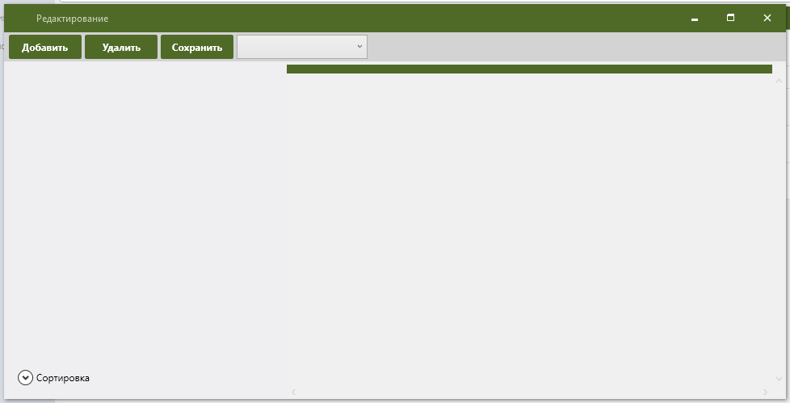
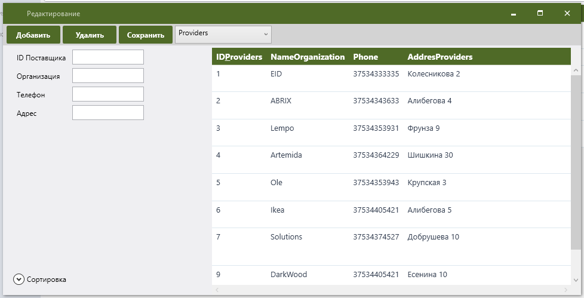

1 Загрузите программу AccountingConcambles.exe, дождитесь загрузки главной формы представленная на рисунке 1.1.
Рисунок 1.1 Главная форма
2 Загрузите форму "Редактирование", дождитесь загрузки главной формы представленная на рисунке 1.2, выберите таблицуу из выпадающего меню.

Рисунок 1.2 Главная форма
3 Загрузится таблица, поробуйте выделить ее содержимое, в ленте данных появяться содержимое данных таблицы, попробуйте поменять значения и нажатть на любые клавиши например "Добавит" "Удалить" "Созранит"

Рисунок 1.3 Главная форма
4 Загрузите программу AccountingConcambles.exe, дождитесь загрузки главной формы представленная на рисунке 1.1.
Рисунок 1.4 Главная форма
5 Загрузите программу AccountingConcambles.exe, дождитесь загрузки главной формы представленная на рисунке 1.1.
Рисунок 1.5 Главная форма
6 Загрузите программу AccountingConcambles.exe, дождитесь загрузки главной формы представленная на рисунке 1.1.
Рисунок 1.6 Главная форма